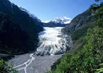
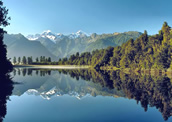

Franz Josef and Fox Glacier
Amazing wonders of nature, both Fox Glacier (13 km long) and Franz Josef Glacier (12 km) descend steeply from the snow-covered Southern Alps to lush rainforest at an altitude of less than 300 metres above sea level.
The snow collects in the Nevé (a huge basin high in the mountains) and the glaciers form from the weighty layers of snow compacting into hard blue ice. The pressure of snow above and gravitational pull force the ice down the valley to 300 metres above sea level. Because of it's steepness and location, Franz Josef Glacier is the most dynamic in the world and responds quickly to variations in precipitation and temperature. You can walk to within metres of the terminal face or take a guided walk on to the glacier itself.
For one of New Zealand's most famous postcard views, the dark waters of Lake Matheson (located a short drive from Fox Glacier township) provide a picture-perfect reflection of Aoraki/Mount Cook, Mount Tasman and the spectacular southern alps.